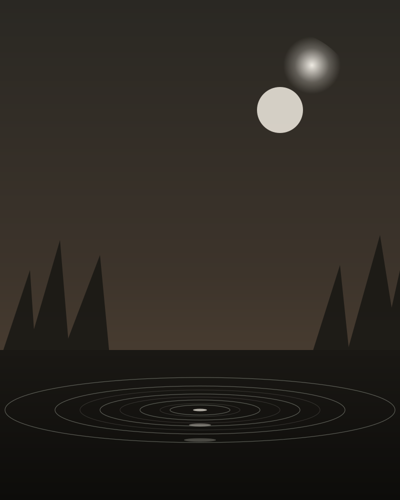

Property A

Editorial PlateStay 01
Ten Thousand Waves
Houses of the Moon — a Japanese onsen transplanted to the high desert
Inspired by Japan's mountain hot spring resorts, refined for forty-five years on twenty acres of piñon forest just outside town. Seventeen ryokan-style suites, nine hot baths, an izakaya restaurant. Featured in 1,000 Places to Visit Before You Die.
The Spa — Japanese Onsen Tradition
Private hot tub suites and the Grand Bath
The Grand Bath is modeled on Japanese onsen — a sloping shallow basin you sit in, choosing your depth, beneath a cascade waterfall. Cold plunge, sauna, meditation room. Massage and bodywork in serene treatment rooms.
Rooms
Cottages with natural wood, traditional artwork, modern luxuries. Two-night minimum.
Dining
Izanami — traditional Japanese izakaya, local ingredients, floor seating option.